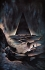

Featured Stories and News
A Mouse in the Walls of the Lesser Redoubt (Part 1)
By Nigel Atkinson

In the Lesser Redoubt, when the Master Monstruwacan dies, his designated successor undergoes an ordeal before he can succeed to his office. But who does he converse with? Are the visions that he sees true showings or false? What choices does he make?
When the last candidate Master Monstruwacan of the Lesser Redoubt undergoes the ordeal — he makes a choice. But is the path he chooses painful yet necessary? Or is it a great betrayal?
The Novella is Posted Entire
A Mouse in the Walls of the Lesser Redoubt is complete
I have a few more stories and articles to bring back, and an article series to finish.
I Zigged When I Should Have Zagged
Hail, good readers.
It's going to look like nought is happening for a time. But it won't — the Almighty willing — be so. I'm at work.
About a decade ago I took over the Night Land website. It was crufty old table-layout HTML with some CSS, and it wasn't mobile-friendly. ('Responsive design' is the insufficiently specific buzzphrase.) Its founder, the late and sorely missed Andy Robertson, never had the time to rework it.
I decided that the right way to adapt the site for mobile browsing was to convert it to a content management system — mostly because the prospect of converting every page by hand looked daunting. It would, I thought, take too long.
I picked Joomla for the CMS — which was the right choice, given its flexibility, the varying layouts of the site's pages. I've had no need to employ "WordPress delenda est!" as a habitual sign-off. Minor updates have worked flawlessly.
The current Joomla version has reached end of life. It's time for a major upgrade. I was making one in the test site. That worked, too, in the sense that all the site contents came over just fine. But a couple of the add-ons I use didn't get upgrades. I could live without one, and shift and rejigger the other — which rejiggering would be a blasted time-consuming nuisance, because this isn't my specialty. I could do it, though.
Will I be able to do it ten years from now? What about the next Night Land webmaster?
That is to say: while Joomla was the right content management system if we were going to have a content management system ... we don't have the right use case for a content management system.
The Night Land website isn't a business, where someone (employee or indepent contractor) is paid to attend the site. It's always been tended by literary enthusiasts who might be techies in their day job, but who don't necessarily have the free time to hurry up and fix it if some part of the tech stack breaks. (I might not have been able to fix a serious problem in a timely manner through the late 2010s.)
A CMS gives productivity gains if someone's diligently maintaining it. It runs on top of a whole bunch of other packages, which all need to work, which all need to be the right versions. Backing the site up means the whole teeter-totter must be in working order one way. Restoring means it must work again the other way. Do both operations still work if something got updated? Am I sure? If I don't test every so often, I'm risking discovering, after some disaster, that I don't have a backup I can restore from.
Contrast that to HTML and simple CSS. The HTML websites I wrote in the 1990s are still completely legible and useable on a desktop, laptop, or tablet. On a phone, you have to scroll and zoom, and one of them is uncommonly annoying ... but you can still read it.
30 years of rapid tech change, and I could put those sites up tomorrow, and they'd pretty much work.
Also: you can always pull a complete copy of an HTML & simple CSS website down from the front end. The browser sees everything. Nothing depends on a database you can't see, and can't reach if you can't log in.
A website made from HTML & simple CSS is not fragile. It's robust. It might show some degradation of function if somebody decides to render it in a way nobody ever rendered websites before. But it can survive prolonged periods of benign neglect.
So, with recent hindsight, it's obvious what, a decade ago, I should have done. I'm doing it now.
Little or nothing will change visibly for a while, while I write the skeleton of the new HTML/CSS site, and a sample of every kind of content page we're going to need. Then at some point you'll see the major structural pages switch all at once, followed by relatively rapid reloading of content pages.
The design is going to retain some features of the current pages, for mobile browsing. But in some ways it will call to mind Andy's original site more than the Joomla template does.
I have no set time to finish. It will probably happen over the next few months.